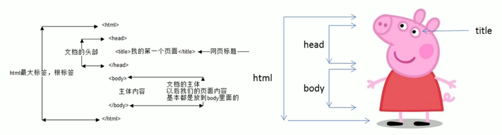

2 HTML初识
2.1 基本语法规范
2.1.1 基本语法概述
HTML标签是由尖括号包围的关键词，例如<html>。
HTML标签通常是成对出现的，例如<html>和</html>，我们称为双标签。标签对中的第一个标签是开始标签，第二个标签是结束标签。
有些特殊标签必须是单个标签（极少情况），例如<br />，我们称为单标签。
2.1.2 标签关系
双标签关系可以分为两类：包含关系和并列关系。
包含关系，又被称为父子关系。 eg：title标签包含于head标签中。
<head>
<title></title>
</head>并列关系，又被称为兄弟关系。 eg：title标签和head标签并列。
<head></head>
<body></body>2.2 基本结构标签
每个网页都会有一个基本的结构标签（也被称为骨架标签），页面内容也是在这些基本标签上书写。HTML页面也称为HTML文档。
<html>
<head>
<title>第一个页面</title>
</head>
<body>
键盘敲烂，工资过万
</body>
</html>HTML文档的后缀名必须是.htm或.html，浏览器的作用是读取HTML文档，并以网页形式显示他们。此时，用浏览器打开这个网页，我们就可以预览我们写的HTML文件了。
| 标题名 | 定义 | 说明 |
|---|---|---|
<heml></html> |
HTML标签 | 页面中最大的标签,我们称为根标签 |
<head></head> |
文档头部 | 注意head标签中我们必须要设置的标签是tittle |
<title></title> |
文档标题 | 让页面拥有一个属于自己的网页标题 |
<body></body> |
文档主体 | 元素包含文档的所有内容，页面内容基本都是放到body里面 |

图2.1: HTML骨架标签